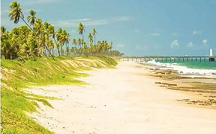
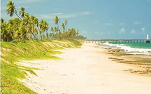
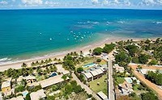

CAMAÇARI-BAHIA
Arembepe
Arembepe fica no município de Camaçari, a 30 km de Salvador-Bahia, no litoral norte do estado.
É uma das mais lindas praias baianas, natureza preservada, um lugar único. Por sua beleza e conexão
com a vida natural, ficou famosa mundialmente nos anos 70, com o movimento hippie. Venha conhecer!
 

Barra do Jacuípe
O paraíso é aqui. Barra do Jacuípe é um lugar ímpar que te conecta as belezas naturais.
Aqui você pode desfrutar de rio e mar com segurança, ainda pode acrescentar
uma linda história na sua vida. Você vai se encantar!


Itacimirim
Em Itacimirim você vai descobrir as belezas naturais de Camaçari.
Um lugar mágico e único, aqui você se conectará com a natureza
e descobrirá os segredos paradisíacos e se apaixonará pela vida simples
do lugar. Te esperamos aqui!
